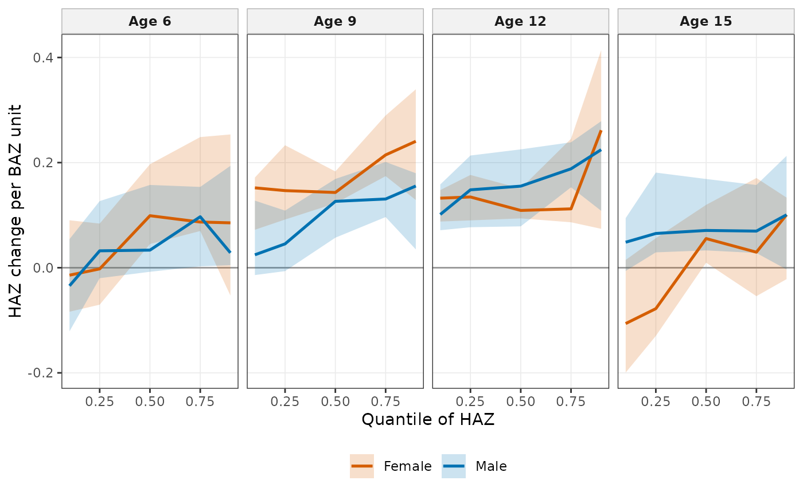

Flow: BMI and the height-for-age distribution (Ho 2026, medRxiv 2026.09.08.26362487)
Source:R/flow-distribution.R
wgh_flow_distributional_height.RdSex-stratified linear quantile mixed models of HAZ on BAZ with a natural spline of age and site, BAZ slopes at stated ages by contrast with a child-level bootstrap, tests of heterogeneity across quantiles and of the sex difference, a mean mixed model for comparison, pooled quantile regression and (optionally) qgam as sensitivity analyses, and crossing checks.
Usage
wgh_flow_distributional_height(
x = NULL,
mode = NULL,
engine = c("lqmm", "rq"),
sensitivity = FALSE,
seed = 2026
)Arguments
- x
Growth data with
height,weightandyear. WhenNULL, a simulatedwgh_likecohort is generated.- mode
Run mode (see
wgh_config());NULLkeeps the current mode.- engine
"lqmm"(Ho 2026, medRxiv 2026.09.08.26362487) or"rq"(faster pooled model).- sensitivity
Run the qgam sensitivity analysis.
- seed
Random seed for the subsample of children drawn when the run mode limits the sample size. The caller's random stream is restored.
Value
A wgh_report.
Examples
# \donttest{
rep <- wgh_flow_distributional_height(growdat, mode = "dev", engine = "rq")
rep
#>
#> ── BMI and the height-for-age distribution (Ho 2026, medRxiv 2026.09.08.26362487) ──
#>
#> Tables (6): mean_model_slopes_male, mean_model_slopes_female, quantile_slopes,
#> heterogeneity, sex_difference, crossing
#> Figures (2): fig_coefficient_functions, fig_spread_by_bmi
#> Models: Male, Male_mean, Female, Female_mean
#> Model status: 14 ok, 0 failed, 1 skipped
#> skipped: qgam sensitivity analysis (sensitivity = FALSE)
#> Settings: mode = dev; engine = rq
plot(rep, 1)

# }